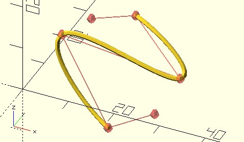
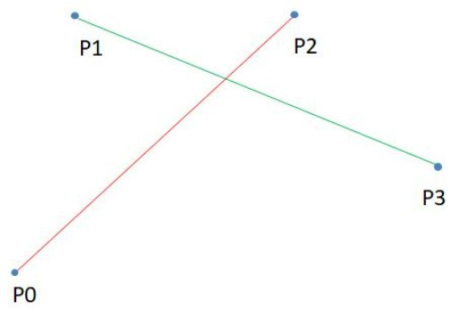
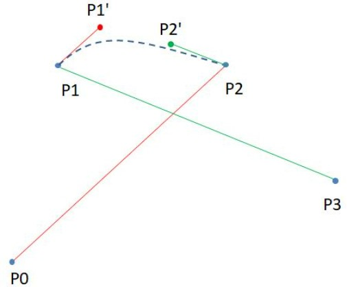
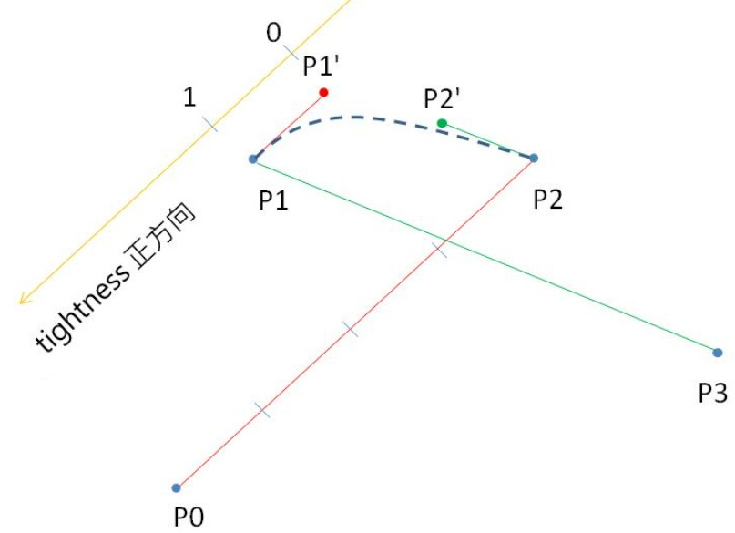
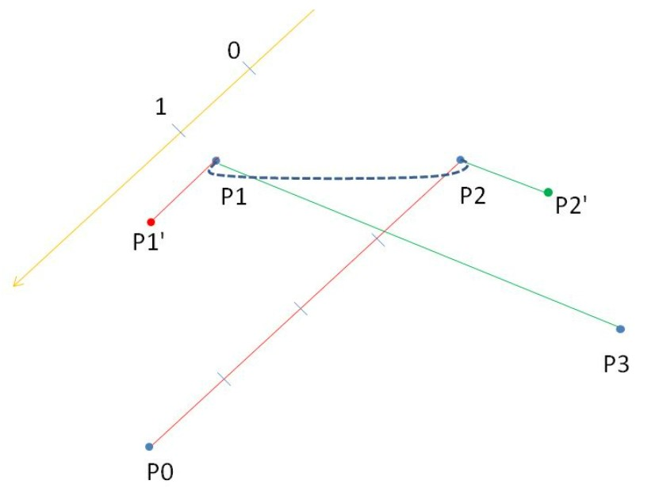
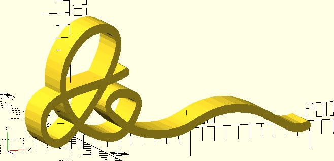

Catmull-Rom 樣條
March 9, 2022在〈貝茲曲線〉可以看到，貝茲曲線會以第一個控制點作為起點，最後一個控制點作為終點，其他的控制點不在曲線上，對於如果起點與終點確定，想調整這兩點間的曲線時，是貝茲曲線的應用場合。
然而有時候，我們想在某個形狀的輪廓上點選取樣，取樣點不連續，這時希望有種曲線，可以通過這些取樣點，這時貝茲曲線就不適用。
curve 函式
對於這個需求，dotSCAD 提供了 curve 函式，必須提供四個控制點以上的控制點，curve 會畫出以第二個控制點為起點、倒數第二個控制點為終點的曲線，例如：
use <curve.scad>
use <polyline_join.scad>
control_points = [
[28, 2, 1],
[15, 8, -10],
[2, 14, 5],
[28, 14, 2],
[15, 21, 9],
[2, 28, 0]
];
t_step = 0.05;
tightness = 0;
polyline_join(curve(t_step, control_points, tightness))
sphere(.5);
// 繪製控制點
# union() {
for(pt = control_points) {
translate(pt)
sphere(1);
}
polyline_join(control_points)
sphere(.1);
}
這會繪製出以下的結果：

tightness 是什麼呢？還有，為什麼不是從第一個控制點到最後一個控制點的曲線呢？這是因為 curve 實現了 Catmull-Rom 樣條。
Catmull-Rom 樣條原理
Catmull-Rom 樣條的出發點其實是貝茲曲線，因為貝茲曲線會通過起點與終點，若在某形狀的輪廓上點選取樣，自動生成一條貝茲曲線，是以兩個鄰接的取樣點作起點與終點，適當地將這些貝茲曲線結合起來，就可以滿足我們的需求。
假設 P0、P1、P2、P3 是指定的控制點，先連接 P0 與 P2，再連接 P1 與 P3：

接著在 P1 求得一條與紅線平行的線段，在 P2 求得一條與綠線平行的線段：

平行的線段要多長，是可以自訂的參數，如上圖看到的，兩條平行線段各可以求得 P1’、P2’，現在你有了 P1、P1’、P2’、P2 四個點了，不就可以用來求得貝茲曲線？因為是貝茲曲線，就一定通過起點 P1 與終點 P2，這就是我們想要的。
這也就是為什麼，curve 畫出的曲線，只會通過中間兩個控制點，而方才談到，平行的線段要多長，是可以自訂的，就上圖來看，平行的線段越長，曲線就越鬆弛，平行的線段越短，曲線就越緊繃。
在 dotSCAD 中，可以透過 curve 的 tightness 來控制，0 為預設的緊繃程度，設為 1 的話是完全緊繃，也就是拉緊為一直線，如果沒什麼特別的需求，通常只要在 0 到 1 之間選個值就可以了。
不過，緊繃程度 0 到 1 只是一個便於理解的方式，tightness 其實可以接受大於 1 的值，也可以是負值，這是因為 curve 將平行的線段設為參考來源線段的四分之一，將該點的緊繃值設為 0，往控制點的方向是正方向，抵達控制點時的緊繃值為 1，遠離控制點的方向是負方向，以 P1 與 P1’ 為例：

P2、P2’ 的關係也是同理，從上圖來看，緊繃程度設為 1 時，P1 與 P1’ 就重合，P2 與 P2’ 也重合，這時就是直線了，緊繃程度越小於 0，上圖的曲線就越上彎曲，緊繃程度大於 1 的話，曲線就扭轉了：

如意旺來之如意
在〈Ruyi pineapple〉有顆鳳梨與如意底座，鳳梨是基於產生球面 Voronoi 的 vrn_sphere 函式建立，至於如意底座，是透過 curve 函式繞出了如意形象的文字：
use <curve.scad>
use <polyline_join.scad>
module ruyi(ruyi_step) {
pts = [
[17, 20],
[17, 15],
[-10, 8],
[-5, 0],
[14, 20],
[3, 24],
[-5, 10],
[10, 0],
[21, 7],
[14, 10],
[12, 5],
[30, 0],
[55, 5],
[80, 0],
[85, 15]
];
points = curve(ruyi_step, pts, 0);
scale([2.4, 3.5, 3.5])
linear_extrude(12.5, center = true)
polyline_join(points)
circle(1);
}
ruyi_step = 0.1;
$fn = 12;
ruyi(ruyi_step);
這會建立以下的模型：

這是 curve 的應用之一，你可以手繪一段曲線，試著用 surface 讀入 OpenSCAD，在調整大小之後，適當地取得曲線上的一些座標點，再透過 curve 看看是不是能適切地擬合，取點的疏密要略作嘗試，不過相對來說，是個比較易於建立曲線的方式了。